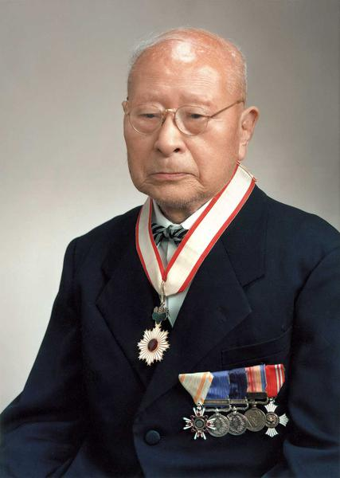

.jpg)
A história da Suzuki Motor Corporation começa no Japão e está diretamente ligada ao trabalho do inventor e empreendedor Michio Suzuki. No início do século XX, em 1909, Michio Suzuki fundou a empresa chamada Suzuki Loom Works, na cidade de Hamamatsu, no Japão. A empresa não tinha foco em veículos: ela fabricava teares para a indústria têxtil, que na época era uma das mais importantes do país. Esses teares se destacavam por serem modernos, mais eficientes e fáceis de usar do que muitos concorrentes. Durante várias décadas, a empresa cresceu nesse setor e chegou a exportar equipamentos têxteis para outros países. No entanto, com o tempo, Michio Suzuki percebeu que o mercado estava mudando e que novas tecnologias industriais — especialmente motores e veículos — teriam um papel cada vez mais importante no futuro. A virada começou após a Segunda Guerra Mundial. O Japão estava devastado economicamente, e havia uma grande necessidade de transporte barato e acessível para a população. Muitas pessoas não podiam comprar carros completos, então surgiram soluções mais simples e econômicas. Nesse contexto, a Suzuki começou a experimentar com motores pequenos. Em 1952, lançou seu primeiro veículo motorizado: o Power Free, uma bicicleta com motor auxiliar. Ela era inovadora porque tinha um sistema que permitia ao usuário pedalar ou usar o motor conforme a necessidade. Esse sucesso levou a empresa a acelerar sua entrada no setor automotivo. Em 1954, o nome foi alterado para Suzuki Motor Corporation, marcando oficialmente a mudança de foco para veículos. Em 1955, veio um marco importante: o Suzulight, o primeiro carro produzido em série pela Suzuki. Ele foi um dos primeiros veículos japoneses a adotar conceitos modernos de carros compactos, com tração dianteira e suspensão independente — tecnologias avançadas para a época. Esse modelo ajudou a consolidar a reputação da Suzuki como especialista em carros pequenos e eficientes. Nos anos seguintes, a empresa passou a se destacar fortemente no desenvolvimento de veículos compactos, que mais tarde dariam origem ao conceito dos kei cars, uma categoria japonesa de carros ultracompactos, baratos de manter e muito eficientes para cidades. A partir dos anos 1960, a Suzuki também entrou com força no mercado de motocicletas. A marca ganhou reconhecimento global por produzir motos leves, resistentes e acessíveis, conquistando mercados na Ásia, Europa e América Latina. Nas décadas seguintes, a empresa expandiu internacionalmente e começou a formar parcerias estratégicas em vários países. Um dos passos mais importantes foi a criação da joint venture com a Maruti Suzuki India Limited, que transformou a Índia em seu maior mercado global. Lá, a Suzuki se tornou líder em carros populares, com modelos simples, econômicos e muito difundidos. Além disso, a Suzuki também ficou conhecida mundialmente por motocicletas de alta performance, como a Hayabusa, e por veículos 4x4 compactos, como o Jimny, que se tornaram populares tanto em cidades quanto em uso off-road. Hoje, a Suzuki mantém sua identidade baseada em três pilares principais: veículos compactos, eficiência e acessibilidade. Mesmo não sendo a maior montadora do mundo, ela continua extremamente relevante, especialmente em países onde economia e praticidade são prioridades.
